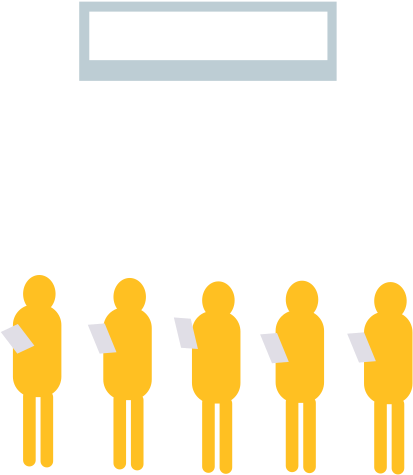
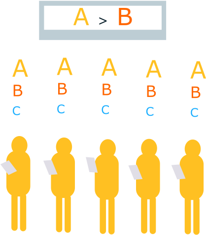
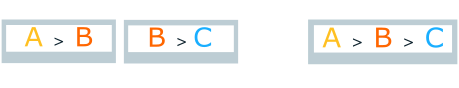
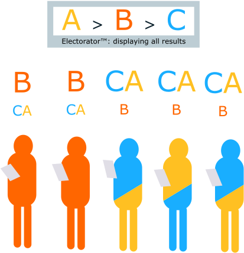
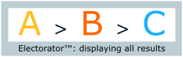
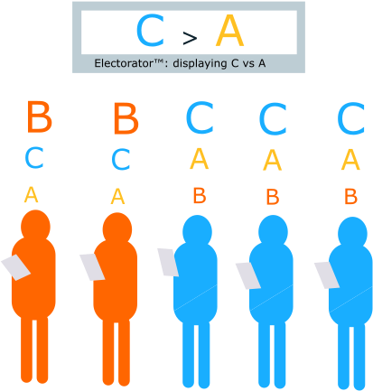
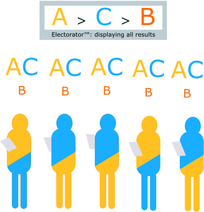
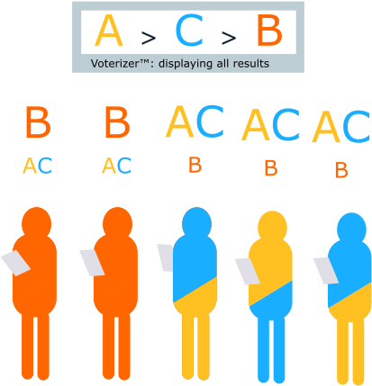
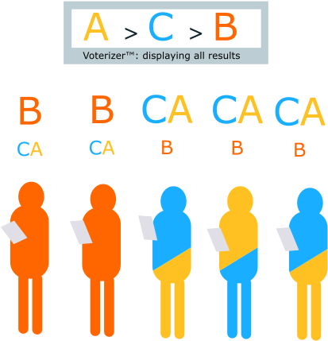
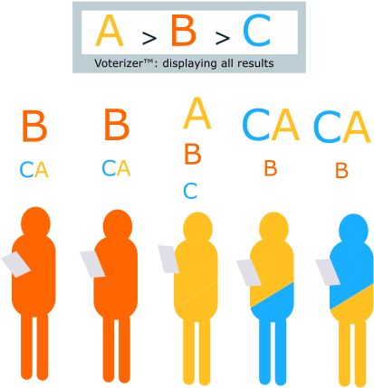

A visually annotated proof of Arrow's Theorem
This is a visualization of this paper.
There exist many types of voting systems: asides from simple plurality, there have been many attempts to find better election methods such as Borda count, the various Condorcet methods, and the controversial Instant Runoff Voting.
NB: We can consider "voting system" to be a pretty flexible term, describing any system which attempts to combine many preferences into a single outcome. A dictatorship is a voting system, rolling dice is a voting system, randomly choosing a preference to follow is a voting system. They are just not very fair ones. Part of Arrow's Theorem is deciding what is fair.
Arrow's Theorem is a political science theorem first put forward in Kenneth Arrow's 1950 doctoral thesis, "A Difficulty in the Concept of Social Welfare". It states that no electoral system in a democracy can fulfill a set of reasonable "fairness" criteria without being susceptible to becoming a dictatorship.
Arrow's Theorem is considered more of a theoretical limit to democracy with fewer real-life applications, because the emergence of a dictator requires a very specific voting turnout. Additionally, a single case of dictatorship is usually not quite as dangerous as it seems; we all know that in a two-candidate race, one person can decide the winner.
In Arrow's words, "Most systems are not going to work badly all of the time. All I proved is that all can work badly at times."
The underlying principles
To begin Arrow's Theorem, we will make some assumptions about what criteria reasonably "fair" election system should fulfill. There are three properties that we would like any election system to have. The first two are about the outcome reflecting the will of individual voters, and the third is a sanity criteria for the outcome.
Unanimity
If every voter puts A over B, the outcome of the election should put A over B.
Irrelevance of Independent Alternatives
The overall ranking of A and B should only depend on their individual rankings against each other.
Transitivity
Given that A is ranked above B, and B is ranked above C, our system should also rank A above C.
We will prove that any system that satisifies these three criteria is susceptible to dictatorship. For simplicity, we are defining a dictator as a single voter who can decide the winner of the election, but the actual proof also proves that this dictator can decide every outcome (who comes 2nd, who comes 3rd, etc).
We will make these generalizations using the idea of an election machine, which use some arbitrary heuristic to decide the outcome of the election from individual votes. (The first, the Electorator™, represents a system which does not satisfy the above criteria. The second, the Voterizer™, represents a system which does satisfy the above criteria). These names were the first ones I could come up with, sorry.
Proving polarity
First, we will prove that all systems that satisfy the above, or all Voterizers, can become polarized. In other words, if all voters put an candidate B first or last, an outcome from such a system must also put B first or last.
We will prove this by contradiction. Let's say for the upcoming mayoral elections the city is planning on using a machine which aggregates voter preferences. The city officials aren't exactly sure how the machine (spoiler: it is an Electorator™), is making its decision, although it assures the city that its mysterious method fulfills our three election criteria. Suspicious that this machine is not telling the truth, the city wants to run some tests on it before the actual election.
They begin a test run of the machine. The city tells every citizen to put a certain candidate on their ballot, B, first or last. Some of the voters choose to put B first, and some voters choose to put B last. (Because we have IIA, the relative order of other candidates should not affect B's position).
However, as you can see above, our election machine, after much mechanical noises and whirring, does not put B at the top or bottom of the election results. In other words, the outcome it has decided on includes order A > B for some higher ranked A, and B > C for some lower ranked C.
This is a problem. The city officials now have each voter move candidate C over A, without disrupting the relationship between the pairs AB or BC. For each individual ranking. B should be out of the picture as either the top or bottom choice. Movement within AC ranking should not affect how B is ordered with respect to A and C.
If every voter puts C above A, the machine gives us an outcome of C > A, which makes sense because the vote was unanimous. But because our machine should also follow IIA and transitivity, our mysterious election machine should also continue to put A > B and B > C as before, irregardless of the movement of A and C now. This implies A > C, which is a contradiction to the most recent outcome. This means that our machine is an Electorator™; does not satisfy unanimity, IIA and transitivity as it claims. For all machines which do satisfy these criteria, we cannot have the outputs A > B and B > C when all voters put B first or last. Otherwise, changing voter choices as we did above results in a contradiction.
We have proved polarity: if all voters put B first or last, any machine that satisfies unanimity, IIA, and transitivity must also put B first or last in the outcome.
Proving the existence of a B-dictator
Next, we will prove that in certain cases, there will be a single voter which must control the outcome of B. This is a pretty obvious observation for a 2-person race with a simple majority election system: if two candidates have the same number of votes, then a single vote can decide the outcome of the election. We will show that similar scenarios exist for any election system with any number of candidates.
The city has discarded their old election machine because, as we found above, it didn't satisfy unanimity, IIA, and transitivity. They've bought a new machine instead, which is indeed a Voterizer™: it satisfies our fairness criteria. The city asks each voter to do the same thing again, putting B either first or last.
Fortunately, the machine returns B at the bottom of the election results! This was an expected behavior, and the city officials are very relieved. However, they decide to do some more finegrained testing just to make sure there are no weird bugs in the system. They ask every voter to put B at the bottom, and then one by one, switch their votes until B goes from the bottom to the top.
The good news, is that B does move to the top! Furthermore, we know that at some point in this process, for every machine which follows our criteria, B should go from the bottom to the top in the outcome. If B stayed at the bottom even when every voter puts B at the top, then the machine does not respect unanimity.
On second thought, though, this behavior is actually pretty concerning. The city asks the voter who had most recently voted to put B back on the top.
This single voter could control the position of B all by themselves! For any Voterizer™ machine, as long as at a certain point the outcome of B goes from bottom to top, as polarity and unanimity necessitates, a voter must exist who can move B from bottom to top. This voter is a B-dictator. In the next section, we will prove that the B-dictator is also a real dictator: that they can move any candidate they choose to the top.
Proving that the B-dictator is actually a real dictator
The city officials take a closer look at the critical moment at which the single voter decides the outcome of B. They divide the rest of the voters into two categories, those who put B at the top and those who put B at the bottom. They realize something else concerning.
Assuming the situation remains polarized, for the voters who put B at the top, their preference is also fixed in other ways. Quite obviously, they cannot put other candidates, A or C, at the top. And for the voters who put B at the bottom, they cannot put candidates A or C at the bottom. However, our B-dictator can do what they want.
At this critical moment, not only does the single voter decide whether B is first or last, but actually by moving A or C to the top they can force A or C to become first as well. This is demonstrated by the following scenario.
We have our group of voters who put B at the bottom and a group of voters who put B at the top. We have our B-dictator put B at the bottom. Acoordingly, B comes out as last in the outcome. A > B and C > B (1)

Then, we have the B-dictator put B at top (moving B from last to first).
Also as we saw above, the outcome of B goes from last to first. B > A and B > C (2)
Then, the B-dictator put A above B again. (3)
By IIA, the AB outcome can only take into account AB votes. This means that the AB situation in (3) is equivalent to if the B-dictator had never put B at the top, or A > B from (1). See below to see how the AB voting for scenario (1) and (3) are the same.
When our B-dictator puts A above B again in (3), the number of voters who voted A > B returns to the exact same as before B shot up to the top in (1).
By IIA, these two situations are indistinguishable as far as AB is concerned, so we must have an outcome of A > B.
Because B was at the top in (2), A is now the top outcome. As for the BC outcome in (3), we continue to have B > C from (2) for any number of candidates C, so B continues to be higher than every other candidate.
It doesn't actually matter what the two groups do about the relative ordering of A and C, because that won't affect their ordering with respect to B. Independence of irrelevant alternatives is a powerful tool. As long as the first group puts B first and the second group puts B last, our B-dictator is also a regular dictator. They can put any candidate they choose at the top.
Technically, this is not a proof of Arrow's theorem, but of a slightly weaker theorem.
For simplicity we define the dictator here as a voter who can put any candidate on top, instead of a voter who can decide arbitrary pair orderings. See the original proof for a more rigorous (and brief) version.